Impression / Experience
Uma identidade visual que se prolonga do suporte gráfico para uma experiência espacial.
Impression / Experience explora a obra de Fanette Mellier através de uma proposta expositiva que cruza comunicação visual, identidade, espaço e interação.
A linguagem gráfica do projeto é construída a partir da cor, da forma e da sobreposição, transportando elementos visuais da comunicação para o próprio ambiente da exposição.
- Identidade Visual
- Design Espacial
- Design Editorial
- Experiência
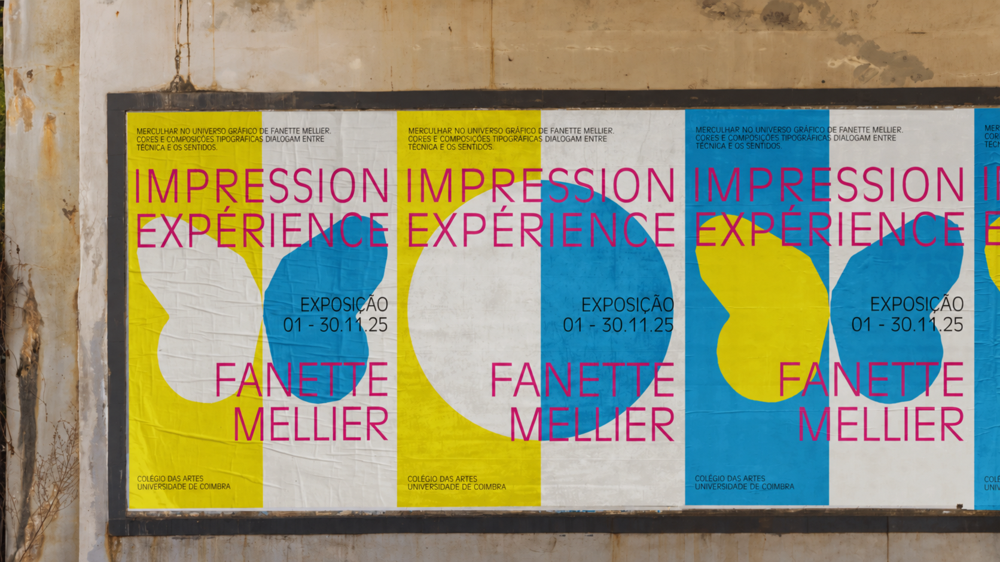
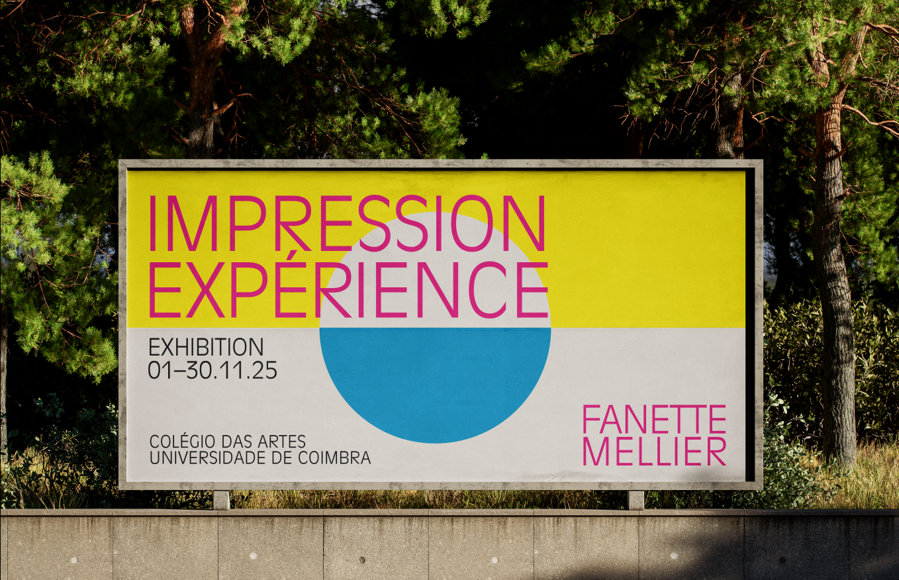
Da identidade gráfica
ao espaço.
A linguagem visual não funciona apenas como comunicação da exposição. Formas, cores e composições passam também a integrar o espaço, estabelecendo continuidade entre identidade e experiência.
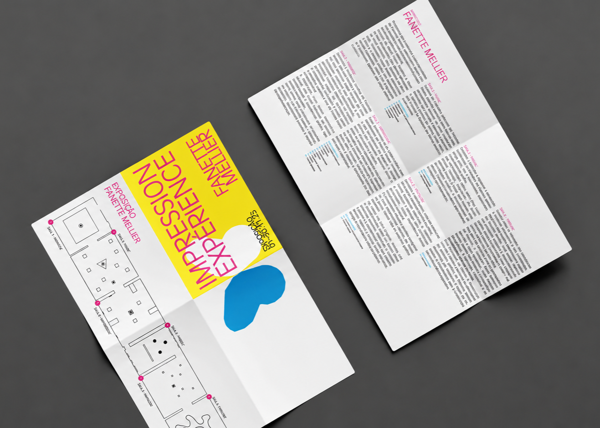
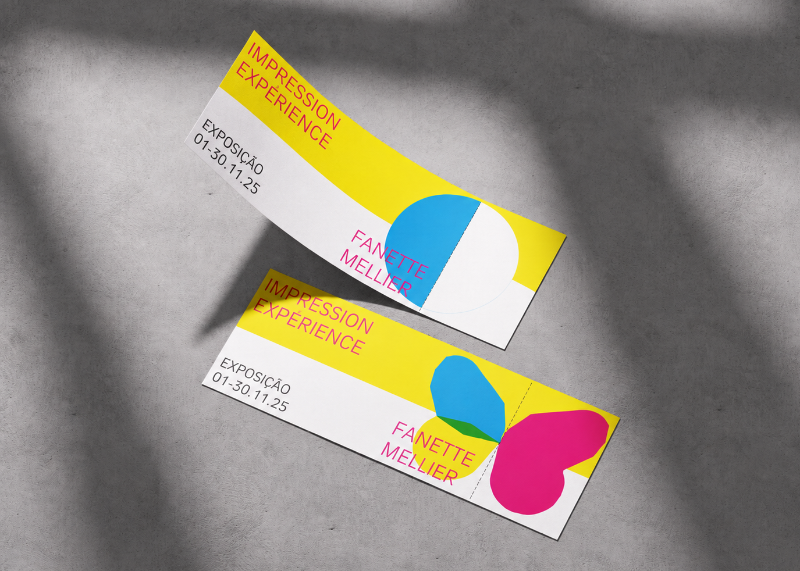
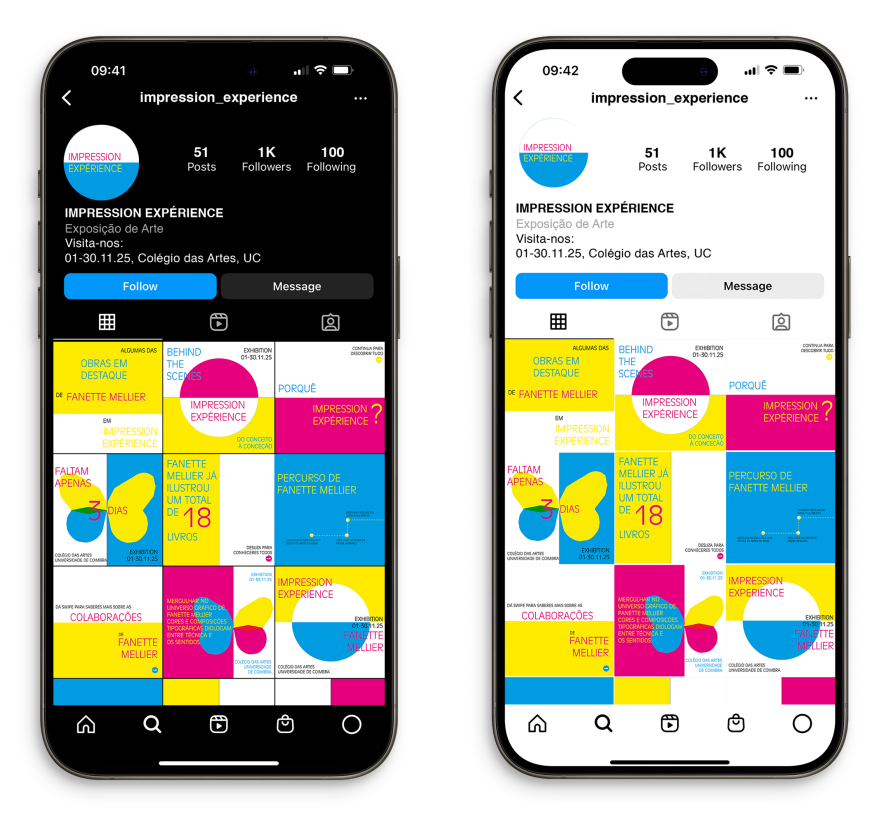
A proposta expositiva transforma a identidade visual num ambiente tridimensional, utilizando cor, escala e elementos gráficos como parte da orientação e da experiência do visitante.
O espaço foi pensado como uma extensão do universo visual da exposição, permitindo que a comunicação deixe de existir apenas como suporte e passe a fazer parte do percurso.
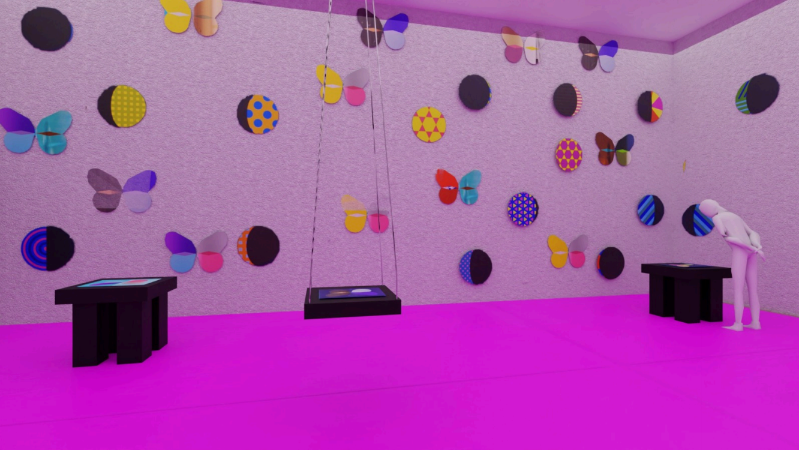
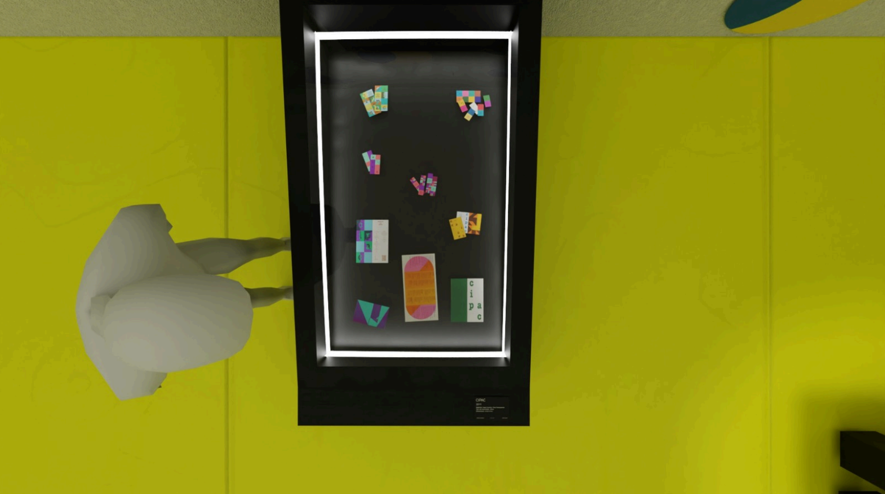
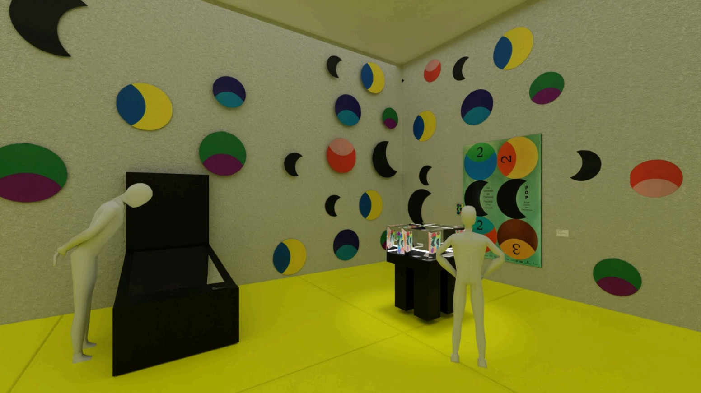


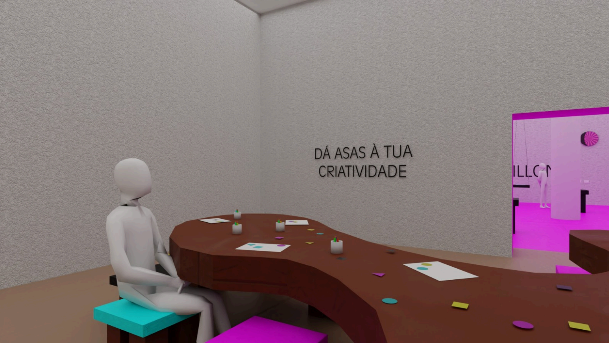
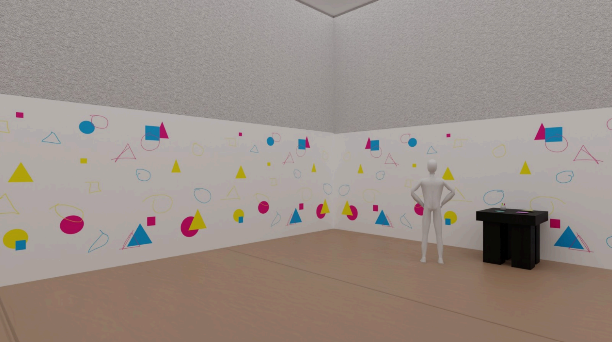
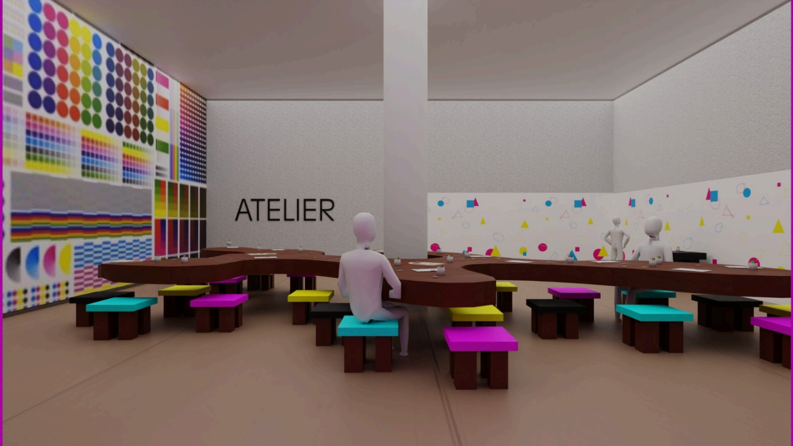